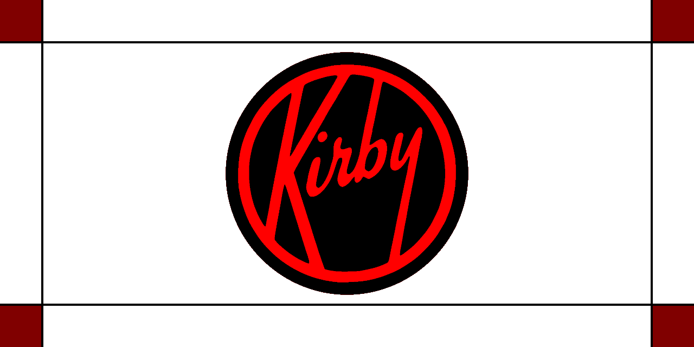

Kirby Restoration Blog
Showcasing my Kirby restoration projects, with servicing procedures and tips/tricks.
← Back to main page
Tradition Model 3-CB
This was my grandmother's on my father's side. It was purchased in 1980, and I inherited it with a non-working headlight socket, broken fan, and bad motor bearings. I polished it using a drill.
Model 518
Purchased from eBay, arrived with broken headlight, bad bearings, and a bad commutator.
Extras
Vacuum Filter Types
Legend: ✅ caught well · ⚠️ partial · ❌ mostly passes
| Filter type | Pollen/Dust (15–100 µm) | Dust mite pellets/Skin flakes (10–40 µm) | Mold spores (2–20 µm) | Dander flakes (5–10 µm) | Dust mite fragments (1–10 µm) | Fine dander / Fel d 1 (1–5 µm) | Smoke/Ultrafines (<1 µm) | Notes |
|---|---|---|---|---|---|---|---|---|
| Shakeout cloth bag* | ✅ | ⚠️ | ❌ | ❌ | ❌ | ❌ | ❌ | Standard up to Classic III, optional up to Legend II |
| Disposable paper | ✅ | ✅ | ⚠️ | ⚠️ | ⚠️ | ❌ | ❌ | Style 1 on Tradition, Style 2 on Heritage, Style 3 on Heritage II through Legend II |
| Synthetic non-HEPA (Micron Magic) | ✅ | ✅ | ✅ | ✅ | ✅ | ✅ | ⚠️ | Introduced on G3, standard G3–G5 |
| HEPA cloth | ✅ | ✅ | ✅ | ✅ | ✅ | ✅ | ✅ | Introduced on G6, standard since; fits back to G3 |
*Shakeout ratings are strongly cake-dependent: a freshly shaken/washed bag is at its worst (bare weave pores are tens of µm), and it filters best right before emptying — the accumulated dust cake does most of the actual filtering. Emptying also re-exposes you to everything captured, so shake outdoors.
Quick Parts Lookup
The full replacement-parts cross-reference has moved to the Parts & Tools page (alongside free 3D-printable Kirby service-tool models).